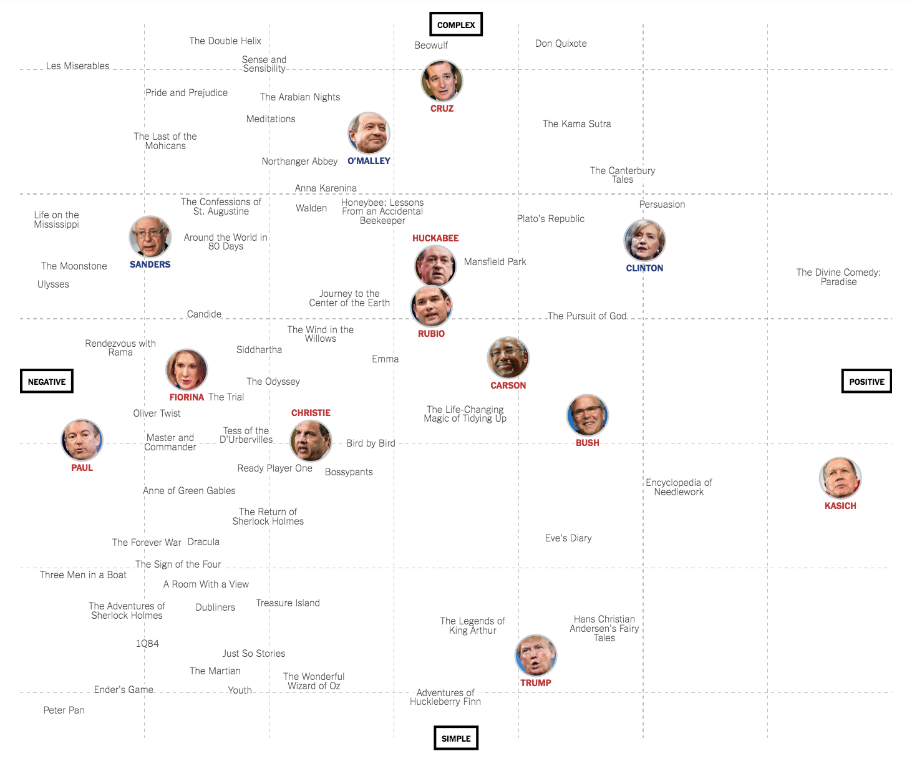
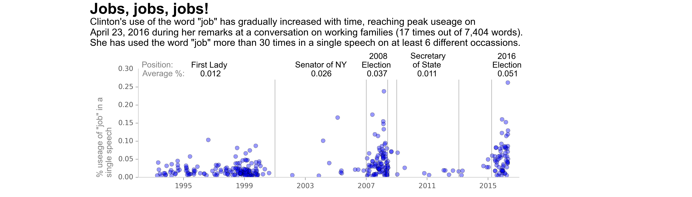

What people say is important. We remember people by the famous words they said, whether it be Martin Luther King Jr.'s "I have a dream", to J.F.K.'s, "Ask not what your country can do for you - ask what you can do for your country." In this day and age, what people say is even more important as everything can be recorded and archived indefinitely. We acutely see this in the news - the Huffington Post published an article today (April 17, 2016), titled, "Release of Clinton's Wall Street Speeches Could End Her Candidacy for President."
Thus, I propose to generate a corpus containing speeches, newspaper editorials, interview answers, and so on, labelled by their speakers/writers. With a large enough corpus, I can use an unsupervised machine learning algorithm to quickly cluster the texts into groups. These groups may reveal surprising connections between different people. However, it would be even more interesting to take new texts - the political speeches of current presidential candidates, in particular - and see which cluster each falls into. We could ask AND answer questions like: Is Donald Trump's rhetoric geometrically closer to that of Mother Theresa or Adolf Hitler? As many famous figures give many speeches, I also propose to work with people's individual corpuses. We could then see what the major themes are that create each cluster, and thus are seemingly most important to that person (assuming a politican's talk is genuine). By including the speech's date as a variable, we could even create a timeline showing how themes change with respect to time. Again, current political candidates' speeches would be ideal for such a project - they talk a lot, as well as flip-flop a lot, and using a computer to figure out what they supposedly care about is much easier and more enjoyable than listening to all of that talk!
This project would be interesting to the general public, as it involves famous, notable people, both villainous and (literally) saintly, as well as current politicans. It could even be interactive, by allowing a user to upload something they have written (or any piece of text not in the corpus) and then returning a list of the closest speakers and speeches/texts as well as the most common, important words that led to how the user's text was clustered. Having interesting, interactive visualizations of the relationships between their text and the famous words of others would engage users as well.
For preliminary plots and proof-of-concept, see here.
NOTE: This project is not meant to express any particular political affiliation or intent. My only motivation is to apply machine learning and natural language text processing techniques to a fun and interesting domain.
Analyzing every aspect of a politian's way of speaking is a popular hobby these days. From way back in 2007, when then-Senator Barack Obama was celebrated for his deep and resonant Smoker's voice", to the present day's countless articles attacking or defending Hillary Clinton purely on the basis of her speaking tone, Americans are obsessed with the way our leaders talk.
These previous analyses have only been qualitative. Now, however, we can start taking apart the 2016 POTUS candidates' speech patterns based on quantitative metrics. For example, the Wall Street Journal's article, What Speech Patterns Say About the Presidential Candidates, looked at how many unique words they use, on average, and what the total number of words spoken was:
Similarly, the New York Times recent article,
Ted Cruz as Beowulf: Matching Candidates With the Books They Sound Like, examined which books
each candidates' speech patterns most likely resemble, based on
quantifying their speaking styles as complex (e.g. Beowulf) or simple (e.g.
Adventures of Huckleberry Finn), and negative (e.g. Ulysses") or
positive (e.g. The Divine Comedy: Paradise):

Interestingly, while the above analysis found Donald Trump to have relatively positive speech patterns, a different article by the New York Times found the leading Republican candidate to have an "ominous" tone, with "constant repetition of divisive phrases, harsh words and violent imagery."
Such analyses of speech patterns remain incredibly popular and compelling to the general public. The New York Times article on Trump's ominous speaking style garnered 1,392 comments. The above Wall Street Journal article had 1,229 Facebook likes. With almost two dozen televised debates and countless more interviews and speeches, it makes sense to put a magnifying glass to the plethora of words spilling from the candidates' mouths.
This project focuses on the speeches of the two 2016 POTUS front-runners, Democratic candidate Hillary Rodham Clinton and Republican candidate Donald John Trump. These two candidates were chosen for analysis because they are the current front-runners in the 2016 election, and thus among the most relevant people existing in the world right now. They both have been public figures for decades now, resulting in a large collection of speeches, talks, interviews, and books. They also have distinct speaking styles as well as distinct topics of interest, resulting in a project that is more interesting for viewers who are not so politically-inclined.
First, speeches, interviews, responses, statements, and various other first-person dialogues from both Clinton and Trump were collected from various internet sources, in order to create a "speech corpus" for each person. The main text of each speech was collected, as well as each speech's title and date. Each text was then tokenized into separate, distinct words; each word in the text was then stemmed into its root word (e.g. "immigration" gets transformed to its root: "immigr"). Stemming allows us to consider all the variants of a word as identical to one another (e.g. "immigration", "immigrant", "immigrants", and "immigrate" are all basically the same). A dictionary for each candidate was then created, based on all of the unique word roots within each candidate's corpus. Each speech could then be represented as an array, with each element of the array representing a different word root, and the value of each element representing the frequency of that word within the speech. If a word's frequency was above a maximum frequency threshold or below a minimum frequency threshold, then the word was excluded from the analysis. For both of their corpuses, the max and min thresholds were set to 70% and 20%. Such thresholds are useful for filtering out noise, but of course, other max and min values could be chosen. Afterwards, sklearn's K-means clustering algorithm was implemented, with >1000 iterations and >1000 initial cluster centers. Because of the large difference in the number of speeches between the two corpses, 9 clusters were chosen for Clinton while 4 clusters were chosen for Trump. Again, using other values for the number of clusters parameter is possible.
While Hillary Clinton has been in the public eye for many years and thus given many public talks, these transcripts are unfortunately not in a single place. I was able to gather 490 unique transcripts by scraping the following websites:
The speeches span from May 31 1969, when she gave the Wellesley College Student Commencement Address, to April 26 2016, when she gave remarks on American manufacturing and improving the economy. However, most of the transcripts come from three distinct periods: First Lady (1993-1997), the 2008 Presidential Election, and the current 2016 Presidential Election. During her tenures as Senator of New York and Secretary of State, I could not find as many publicly available transcripts. However, they are undoubtedly archived somewhere, and will eventually be included into the final results.Due to the controversay of using her private email account, the State Department also publicly released nearly 7,000 pages of Clinton's (heavily redacted) emails from her time as Secretary of State. While I did not include these in the current analysis, it would be interesting to compare her private emails to her public statements. What would also be interesting is to see the transcripts to Hillary Clinton's paid Wall Street speeches, which are still garnering news today (e.g. Chicago Tribune: What Hillary Clinton said behind closed doors).
Like Hillary Clinton, Donald Trump has been a famous and public figure for several years now. Unlike Hillary Clinton, however, Trump is primarily a businessman, and the 2016 Presidential election is his first real foray into the public spotlight. Thus, he has given much less formal speeches than Clinton. I was able to gather 32 unique transcripts of speeches, statements, and interviews given by Trump, ranging from March 2013 to present time. These transcripts came from scraping the following websites:
I also scraped individual transcripts from:
Considering that Trump's logo is: Make America Great Again, it's no surprise that most of those words are in the top ten words list.
All of Clinton's 490 speeches in the corpus are clustered into 9 groups. These groups are found automatically by scikit-learn's k-means clustering algorithm, solely based on the terms in each speech. After running the algorithm 1000 times, with 800 different randomized initial cluster centers, the speeches were found to consistently group into the same 9 categories. By getting the ten most meaningful* terms of each group, I could distinguish the primary topic of each group. These are:
History, culture, and honor: imagine, history, cultural, past, White House, honored, celebrate, historic, save, century
Education: schools, teachers, educated, students, parents, public, child, learn, kids, programs
Elections & politics: vote, Obama, campaigns, Democrats, election, fight, winning, health, Republican, parties
Economy: tax, paying, economy, company, energy, college, health, workers, invest
Iraq War & the Bush Administration:
Iraq, war, military, security, administration, policies, Bush, strategy, threats, government, fail
Healthcare reform: health, health care, insurance, costs, plans, hospital, medical,reform, doctors, nurses
Peace & security: peace, security, United States, developments, efforts, threats, attack, regions, government, partner
Domestic & social issues: parents, child, schools, mother, violence, young people, programs, health, problems, read
Democracy & human rights:
democracies, human, society, human right, girls, government, educated, unites, conferences, voice, economic
*"lot", "got", "DR", and "let" were not considered to have any meaning, and therefore not included in defining each cluster theme, despite some of these terms being in the top ten most important words for the Domestic & social issues cluster, Economy cluster, and Elections & politics cluster.
By plotting each speech in a scatterplot, with the speech date on the x-axis and the speech category on the y-axis, we can visualize how Clinton's speech topics change with time. The lines distinguish the different roles Hillary Clinton had at different time periods: First Lady of the White House (January 1993 to January 2001), New York State Senator (January 2001 to January 2007), 2008 Presidential Election candidate (January 2007 - June 2008), Secretary of State (January 2009 - Febraury 2013), and 2016 Presidential Election candidate (April 2015 - present).
We can look at a single speech topic, and then go across the plot to see how often she speaks about that topic. For example, Healthcare reform was a very important issue for Hillary Clinton when she was First Lady and chair of the taskforce devising the Clinton health care plan of 1993, i.e. Hillarycare. This topic was also important during the 2008 POTUS election, when both she and then-senator Barack Obama both spoke at length of the need for healthcare reform. In contrast, healthcare reform is an issue Hillary Clinton does not talk at all about in the current 2016 POTUS election. The Affordable Care Act is already in effect, so healthcare reform is not an important issue in this election for a democratic candidate like Clinton.
Let's look at histograms of the speech categories during each of Hillary Clinton's roles.
We can count the number of times Clinton uses words or phrases specific to a particular topic, as a proxy for how important that topic is to her. If we divide the number of times a word is spoken during a speech by the total number of words in that speech, we get that word's "percent useage". Let's look at how different words' percent useages change with time.


Clustering Donald Trump's transcripts, in this project, is difficult for a few reasons. First, he really has only publicly spoken in the past 2 years, and 99% (if not 100%) of these speeches and interviews are related to the 2016 presidential election. For instance, some of the most frequent terms he uses contain his campaign slogan and words like: "poll", "campaign", "president", "support", and "New Hampshire". So, we have to group this already quite similar group of talks into more distinct sub-groups. After running scikit-learn's k-means clustering algorithm 3000 times, with 2000 different randomized initial cluster centers and 4 groups, the most meaningful* terms were analyzed in order to create the following speech categories:
Immigration & Hillary Clinton: Immigration, workers, program, foreign, Hillary/Hillary Clinton/Clinton, American, lower, record, obvious, highly
Stuff: know, very, people, because, country, look, Great, like, right, many
Conservative people: Cruz/Ted Cruz/Ted, life, issued, pro, like Ronald Reagan/like Ronald/Ronald Reagan/Ronald/Reagan, woman, conservative, pro life, lie, federal
Make America Great Again: American/America, border, Great, people, president, state, Israel, Iran, government, China
*"don't" and "I've" were not considered to have any meaning, and therefore not included in defining each cluster theme, despite being in the top ten most important words for the "Stuff" category
Because the timespan of the speeches in Trump's corpus is very short, with the oldest speech dating back to only March 15, 2013, it is not informative to see how the topics change with time. If Donald Trump remains politically active, however, then this will obviously change!